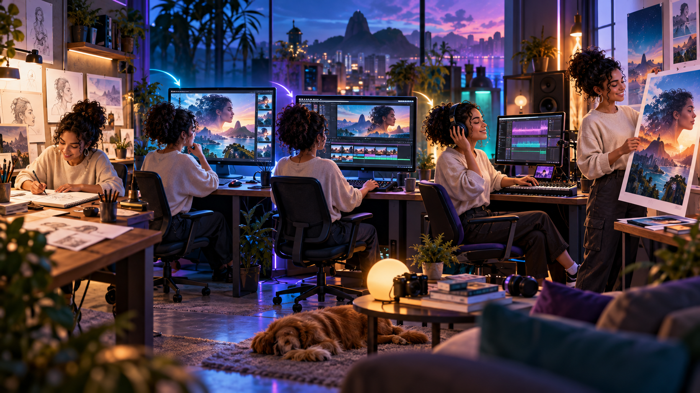
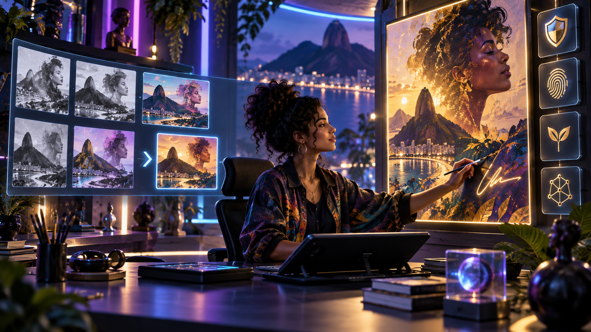

O que você vai aprender
- Usar IA como instrumento, não como identidade.
- Dirigir imagem, vídeo, música e design.
- Construir um fluxo multimídia consistente.
- Selecionar, editar e combinar resultados.
- Proteger autoria, direitos e reputação.
Aprenda a transformar ferramentas generativas em instrumentos de arte, vídeo, música e design — com direção humana, linguagem própria e responsabilidade.

Você criará uma peça multimídia autoral com conceito, direção visual e sonora, processo documentado, créditos e apresentação profissional.

Comece pela intenção criativa, não pela ferramenta.
É a combinação entre repertório humano, decisão artística e sistemas capazes de gerar variações rapidamente.
Gerar opções é diferente de criar uma obra. Autoria aparece nas escolhas, recusas, edições e relações construídas.
Quanto mais referências você entende, mais precisamente consegue combinar, tensionar e transformar ideias.
Um conceito define tema, emoção, público, mensagem e limites antes da produção começar.
Intenção + público + emoção + referências + limites + resultado desejado.
Aprenda a pedir, observar e refinar com intenção.
Defina uso, formato, assunto, contexto, estilo, composição e restrições antes de escrever comandos.
Enquadramento, luz, cor, textura, profundidade e ritmo ajudam a dirigir resultados coerentes.
Cada nova tentativa deve corrigir uma coisa específica, preservando o que já funciona.
Escolher exige critério. Avalie aderência ao conceito, clareza, impacto e possibilidade de edição.
Conceito + atmosfera + composição + paleta + textura + itens proibidos.
Da geração bruta à peça visual pronta para circular.
Capa, cartaz, cena narrativa e material educativo pedem composições e detalhes diferentes.
Registre traços, roupas, proporções, gestos e elementos fixos para reduzir variações indesejadas.
Gere a imagem limpa e aplique textos em uma ferramenta própria para preservar leitura e identidade.
Recorte, cor, contraste, limpeza e composição transformam material gerado em trabalho profissional.
Paleta, tipografia, enquadramentos, textura, personagem e regras de aplicação.

Planeje continuidade antes de gerar cenas.
Separe a narrativa em planos com ação, duração, câmera, ambiente e transição definidos.
Direção de movimento, luz, cor, figurino e posição precisam conversar de um plano para o outro.
Câmera e animação devem reforçar emoção e informação, não apenas demonstrar tecnologia.
A edição organiza atenção, cria contraste e conecta materiais de origens diferentes.
Plano + ação + câmera + duração + continuidade + som + transição.
Construa som com intenção, estrutura e assinatura.
Antes do gênero, defina o que a trilha precisa fazer a pessoa sentir e perceber.
Introdução, desenvolvimento, contraste e final conduzem a experiência ao longo do tempo.
Não imite pessoas sem autorização. Construa identidade sonora própria e registre as fontes utilizadas.
Equilibre voz, música e efeitos, sincronize cortes e teste a obra em diferentes aparelhos.
Emoção + andamento + instrumentos + textura + dinâmica + uso permitido.
Publique com transparência e transforme processo em portfólio.
Confira termos de uso, origem dos materiais, autorização de pessoas e regras da plataforma de publicação.
Registre contribuições humanas, ferramentas, fontes e transformações realizadas sem diminuir seu trabalho.
Apresente problema, conceito, referências, decisões, versões, resultado e aprendizados em um estudo de caso.
Defina uma obra pequena, calendário, momentos de teste, publicação e análise de resposta.
Conceito + processo + decisões humanas + direitos + créditos + obra final + aprendizados.
Crie uma peça curta em que imagem, movimento, som e design sirvam ao mesmo conceito. Mostre sua direção — não apenas o resultado da ferramenta.